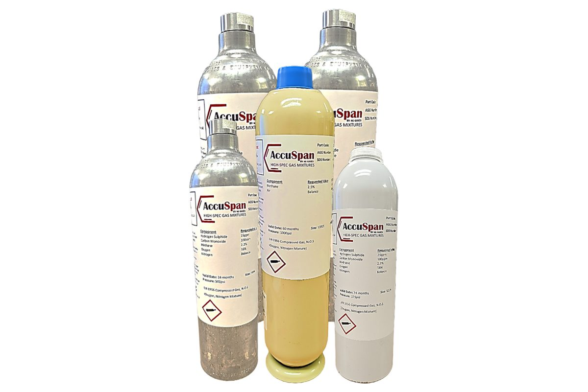

Non-Refillable Cylinders (NRC)
12DA · 34DA · 60DA · 112DA · 103DS · 5DAI
AccuSpan can supply the following gases in non-refillable type cylinders in a range of bespoke mixtures.
- All cylinders manufactured to ISO7866
- C10 valve to ISO10297

Gases in Non-Refillable Cylinders
- Hydrogen Sulphide (H2S)
- Sulphur Dioxide (SO2)
- Quad or Quint Mixtures (i.e H2S, SO2, CH4, CO, CO2, O2 in N2 etc)
- Non-Reactive Gases (N2, CH4, C3H8, C5H10, He, H2, CO2, CO, SF6 etc)
- Ammonia (NH3)
- Chlorine (Cl2)
- Ethylene Oxide (ETO)
- Ethanol (C2H5OH)
- Hydrogen Chloride (HCl)
- Hydrogen Cyanide (HCN)
- Nitric Oxide (NO)
- Nitrogen Dioxide (NO2)
- Silane (SiH4)
- Phosphine (PH3)
NRC Cylinder Range
| Type | Gas Volume | Service Pressure | Dimensions | Weight |
|---|---|---|---|---|
| 12DA | 12 ltr | 12 bar | 285mm x 74mm | 0.14kg |
| 34DA | 34 ltr | 35 bar | 289mm x 76mm | 0.61kg |
| 60DA | 60 ltr | 35 bar | 360mm x 90mm | 1.19kg |
| 112DA | 112 ltr | 70 bar | 360mm x 90mm | 1.19kg |
| 103DS | 103 ltr | 70 bar | 345mm x 83mm | 1.4kg |
| 5DAI* | 60 ltr | 120 bar | 240mm x 70mm | 0.75kg |
*Recommended for the India market as water capacity <0.5 litres. All cylinders are manufactured to ISO7866. C10 valve (5/8” - 18) Stainless steel manufactured to ISO10297.

12DA
The 12DA is an aerosol type gas cylinder used where the quantity of gas required is small. The 12DA is supplied with a screw type valve and requires an aerosol regulator.

60DA
The 60DA cylinder is fitted with a C10 valve and filled to 35bar for use with both reactive and non-reactive gases. We recommend using the FF100, ODFR or Vari-flow regulator for flow control.

112DA
The 112DA cylinder is fitted with a C10 valve and filled to 70 bar for use with both reactive and non-reactive gases. We recommend using the FF100, ODFR or Vari-flow regulator for flow control.

103DS
The 103DS cylinder is fitted with a C10 valve and filled to 70 bar for use with non-reactive gases only. We recommend using the FF100, ODFR or Vari-flow regulator for flow control.
5DAI
The 5DAI cylinder is fitted with a C10 valve and filled to 120 bar for use with reactive and non-reactive gases and has been specifically designed for the India market as water capacity is under 0.5litres. In addition this cylinder can be supplied most customers outside Europe. We recommend using the FF100, ODFR or Vari-flow regulator for flow control.
Shelf-Life Table
AccuSpan offer industry leading shelf life for its range of NRC products.
| Gas Mixture Shelf-life – NRC Mixtures | Cylinder Sizes – Non Refillable Cylinders (NRC) | Recommended shelf Life |
|---|---|---|
| Non-Reactive Mixtures | 103 DS, 12DA, 34DA, 60DA, 112DA, and 5DAI | 60 months |
| Hydrogen Sulphide (<5ppm – 1%) | 34DA, 60DA, 112DA and 5DAI | 24 months |
| Hydrogen Sulphide (5ppm – 1%) | 12DA | 12 months |
| Sulphur Dioxide (10ppm – 1%) | 34DA, 60DA, 112DA and 5DAI | 24 months |
| Sulphur Dioxide (10ppm – 1%) | 12DA | 12 months |
| Ammonia | 34DA, 60DA, 112DA and 5DAI | 18 months |
| Chlorine | 34DA, 60DA and 112DA | 9 months |
| Hydrogen Chloride | 34DA, 60DA, 112DA and 5DAI | 12 months |
| Hydrogen Cyanide | 34DA, 60DA and 112DA | 12 months |
| Ethylene Oxide | 34DA, 60DA, 112DA and 5DAI | 12 months |
| Nitric Oxide | 34DA, 60DA, 112DA and 5DAI | 18 months |
| Nitrogen Dioxide | 34DA, 60DA, 112DA and 5DAI | 12 Months |
| Mercaptan Mixtures (5ppm – 1%) | 34DA, 60DA, 112DA and 5DAI | 6 months |
| Phosphine | 34DA, 60DA and 112DA | 12 months |
| Silane | 34DA, 60DA and 112DA | 12 months |
Tolerances
| Non-Refillable Cylinders (NRC) | Mixture Tolerance | Certified Accuracy |
|---|---|---|
| 1.0 ppm to 4.9 ppm | 20% | 1% |
| 5.0 ppm to 19.9 ppm | 10% | 1% |
| 20.0 ppm to 50.0 ppm | 10% | 1% |
| > 50ppm | 2% | 1% |